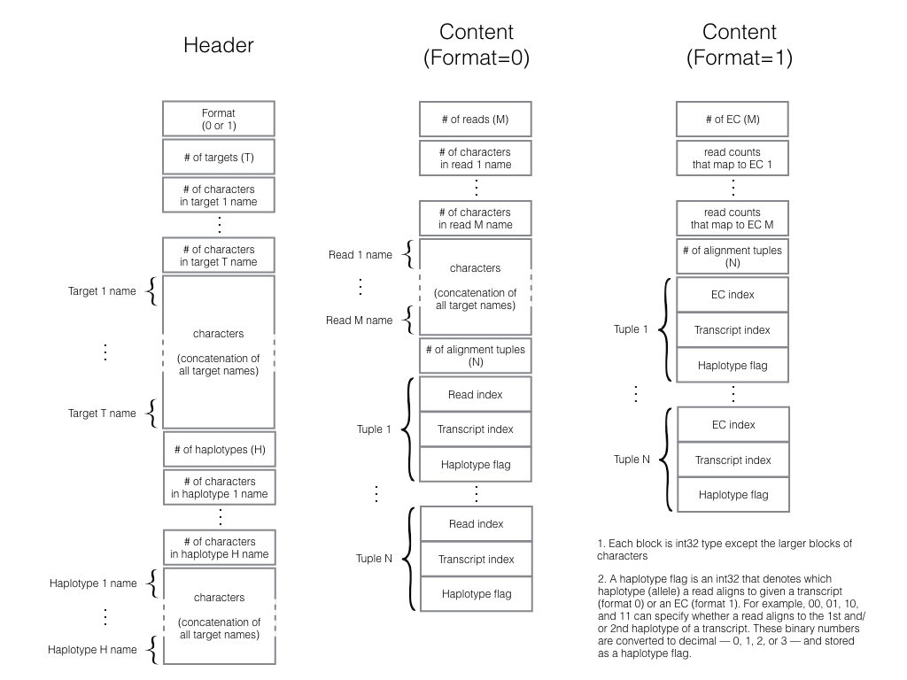
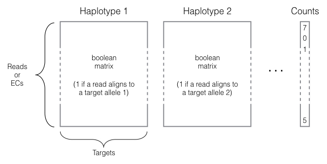

alntools processes next-generation sequencing read alignments into a sparse compressed incidence matrix (aka Equivalence Classes) and stores it in a pre-defined binary format for efficient downstream analyses and storage. It enables us to compare, contrast, or combine the results of different alignment strategies.
Note: Although alntools is available at PyPI for pip install or easy_install, we highly recommend using Anaconda distribution of python to install all the dependencies without issues. We are going to post alntools on Anaconda Cloud soon, so add the following channels if you have not already:
$ conda config --add channels r
$ conda config --add channels bioconda
To avoid conflicts among dependencies, we also highly recommend using conda virtual environment and install alntools in it:
$ git clone https://github.com/churchill-lab/alntools
$ cd alntools
$ conda create -n alntools python=2
$ source activate alntools
(alntools) $ conda install -c kbchoi emase
(alntools) $ conda install future
(alntools) $ python setup.py install
That's all! Now alntools is ready. Once you are done using alntools, you can go out from its virtual environment anytime:
(alntools) $ source deactivate
$ alntools -h
Usage: alntools [OPTIONS] COMMAND [ARGS]...
Commands:
split split a BAM file into chunks
range Report the range of alignment to each target
bam2ec Convert a BAM file to EC
bam2emase Convert a BAM file to APM
ec2emase Convert an EC file to EMASE
emase2ec Convert an EMASE file to EC
Options:
--version Show the version and exit.
-h, --help Show this message and exit.
•split divides a bam file into smaller bam files (with the same header) to help parallelism in any downstream analyses. An input bam file is split such that all the alignment of a same read appear only in a single chunk. No sorting required.
$ alntools split -h
Usage: alntools split <options> bam_file N
Splits a BAM file (bam_file) into N smaller ones
Options:
-c, --chunks INTEGER Number of chunks to process
-d, --directory DIRECTORY Output directory for storing bam file chunks
-v, --verbose Run in verbose mode
-h, --help Show this message and exit.
•range reports the effective lengths of alignment targets from the input data by finding the left and rightmost base of all reads that align to each target.
$ alntools range -h
Usage: alntools range <options> [INPUT]... range_file
Create range file for specified BAM files
Options:
-d, --directory DIRECTORY temp directory
-t, --targets TARGET FILE Target ID file
-v, --verbose Run in verbose mode
-h, --help Show this message and exit.
•bam2ec processes a bam file, creates equivalence classes, and exports them in a binary format. It runs in parallel by dividing an input bam file into chunks. If --range option is set, it reports effective target lengths according to alignment data.
$ alntools bam2ec -h
Usage: alntools bam2ec <options> bam_file ec_file
Convert a BAM file (bam_file) to an EC file (ec_file).
Options:
-c, --chunks INTEGER Number of chunks to process
-d, --directory DIRECTORY Temp directory to store bam file chunks
--range PATH Report alignment range
-t, --targets TARGET FILE Target ID file
-v, --verbose Run in verbose mode
-h, --help Show this message and exit.
•bam2emaseprocesses a bam file, creates equivalence classes, and exports them in an emase HDF5 format so we can use EMASE with equivalence classes. It also runs in parallel by dividing an input bam file into chunks.
$ alntools bam2emase -h
Usage: alntools bam2emase <options> bam_file emase_file
Convert a BAM file (bam_file) to an EMASE file (emase_file).
Options:
-c, --chunks INTEGER Number of chunks to process
-d, --directory DIRECTORY Temp directory to store bam file chunks
-t, --targets TARGET FILE Target ID file
-v, --verbose Run in verbose mode
-h, --help Show this message and exit.
•ec2emase and emase2ec support conversion between binary and emase formats of equivalence class file.
$ alntools ec2emase -h
Usage: alntools ec2emase <options> ec_file emase_file
Convert an binary EC file (ec_file) to an EMASE file (emase_file).
Options:
-v, --verbose Run in verbose mode
-h, --help Show this message and exit.
$ alntools emase2ec -h
Usage: alntools emase2ec <options> emase_file ec_file
Convert an EMASE file (emase_file) to an binary EC file (ec_file).
Options:
-v, --verbose Run in verbose mode
-h, --help Show this message and exit.

